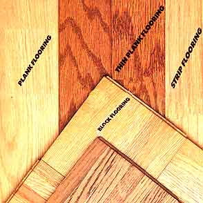
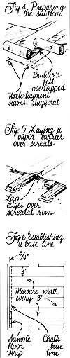
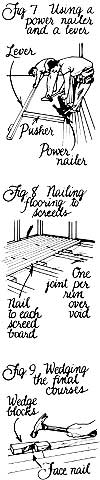
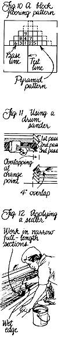

Installing Hardwood Flooring
Guide to the only job you'll be proud to have people walk all over, including the anatomy of a floor, clearing the decks, laying down the boards, installation, finishing touches, illustrated instructions.
By Richard Freudenberger
November/December 1988
MOTHER'S HANDBOOK
Its the only rewarding job where you start at the bottom and stay there.
IMAGINE WAKING UP ONE morning to be greeted by the texture of moist clay or cold, hard stone beneath your feet. If this doesn't sound appealing to you, neither did it to our enterprising forebears, who found their solution in wood. Abundant and easily worked, blade-hewn timbers made a strong, natural covering for the structure underfoot, and with time evolved into the smooth, square-planed surfaces we've become accustomed to seeing in houses of every stripe.
The fact is that although hardwood floors are the benchmark of expensive homes, the materials are usually less costly than good carpet-certainly if they're already in place and need only to be renewed. And though it could be argued that modern carpeting or resilient flooring is easier to care for (that's why such products have become so popular in the last few decades), the advent of nail-tough urethane finishes and strict attention to quality control among wood-floor manufacturers have all but pulled the rug from under such once-sound logic.
A Shoe's-Eye View
Even if you have no interest in installing flooring yourself, it pays to find out what's happening beneath your feet before you get the floor man in for an estimate. And if you're determined to try your hand at laying in your own boards-or merely refinishing the ones already there-the walkthrough that follows will do a good deal to guide your way.
Let's assume you're just looking, for now. Chances are, if you're not in the building trade, you don't realize that there's more out there than the common oak-strip flooring. The two major woodflooring associations in the U.S.-National Oak Flooring Manufacturers Association and Maple Flooring Manufacturers Association-set the specifications and grading rules for oak, beech, birch, hard maple and pecan floor products. (The harder softwoods-southern pine, Douglas fir and western larch-are graded by their own associations' standards.)
To get things straight: Strip flooring is normally 3/4" (25/32") thick and 2 1/4" wide, though it can range in width from 1 1/2" to 3 1/2". Lengths are random, from small "shorts" of 9" to 18", to special-order pieces a full 16' long.
Other thicknesses-5/16", 1/2" and 3/8"-are made in several widths for particular applications. Plank flooring covers 3/4" boards from 3" to 8" in width; 5/16" thick plank, made without tongueand-groove joints, is called squareedge flooring. Several types of block flooring also exist. Unit and laminated parquet blocks are generally 1/2" or 3/4" thick and measure 9" X 9".
Slat blocks-with the familiar mosaic and parquet patterns-are usually thinner, with flat edges, and come in 6" to 30" squares.
If that sounds complicated, better read it over again before you tackle the grading rules which follow. I'll just cover oak to be merciful: The cut can be a standard plain-sawn or a special quartersawn order. The difference is that quartersawn wood is cut perpendicular to the tree's growth rings, offering a straighter grain and less tendency to swell and warp. Once installed, the difference is mostly visual, since the interlocking tongues and grooves keep movement to a minimum.
Better strip flooring (Fig. 1) is end-matched (the ends as well as the sides have a machined joint) and hollow backed-meaning the bottom surfaces are relieved slightly to allow for irregular mounting surfaces. You'll find that oak comes in five grades, based on appearance and length.
Clear is rated the best, as it's free of defects and has a uniform color. Select has a limited number of "character marks" and a cleaner appearance than the No. 1 and No. 2 common grades, which are accented by a range of colors and natural imperfections. And though shorts are just manufacturing surplus, they offer a welcome variety in use because they're a combination of all grades. Prefinished oak and the other hardwoods and softwoods have similar levels of quality, and are designated by name, number or letter.
Which type of flooring you choose is up to you-but if you hope to stand on tradition, the 2 1/4" clear oak strip in a light stain gives a formal look, while a common grade stained darker offers a rustic appearance. Plugged plank flooring is often used in Colonial homes and libraries. OK-now that you have that wisdom under your belt, it's time to find out what's under the surface you're walking on. Is there a chance that finished wood hides beneath that vinyl tile? Unless you're prepared to resurface the floor in any case, pick an inconspicuous spot and pry or peel up the covering with a broad putty knife. You'll probably see a brown underlayment beneath; it's a 1/4" or so sheet of particle board, plywood or hardboard used to level the floor below and provide additional rigidity.
If you can get a corner of that material up without cracking it, you should be able to determine if the original flooring still exists. It could be linoleum or asphalt tile, or it may be strip or plank flooring that's worn but restorable. On the other hand, the flooring could have been ripped up long ago, leaving a plywood or 1 X 6 subfloor to serve as a sound basis for the project you're about to take on. Here's where the road forks. If you were honestly just looking for buried treasure and it wasn't there, you can put the material back where it was and forget it-you haven't spent a dime. If there's wood flooring in place, you'll have to strip away everything on top of it to check its condition. And if you want hardwood and it's not there, you'll still have to expose the subfloor to begin the job right. The last option is the most involved, so let's concentrate on that.
Start by carefully removing any good baseboard trim with a putty knife and a flat pry bar.
Then peel or scrape up the old material. It may be glued to the underlayment, so it's often easier to pry up whole sections at once, using a square-edge spade and taking care to lift, not cut, the anchor nails. Your goal is to determine if the floor is built to accept the new covering. With wood joist construction, 2 X 10s spaced 16" on center are common; the subfloor on top should be exterior-grade plywood of at least 1/2" thickness, though 5/8" is preferable, and 3/4" is more desirable yet. If a board subfloor is used, it must be full 3/4" squareedge stock: 1 X 4s or 1 X 6s in the top two grades of structural lumber, laid diagonally across the joists.
The two important things to check for are spacing between sheets or boards (1/4" is enough to allow for expansion) and adequate nailing, especially at the joists where two pieces meet (Fig. 2). With plywood, there should be a nail about every 6"; boards require two 8d or l0d commons at each bearing point. Building over a concrete slab presents its own set of circumstances. First, the slab needs to be flat, level and abovegrade. The floor installation, which we'll get into later, involves putting down plywood or wooden screed strips as a base, so a sound, dry pad is a must. Chronic moisture or humidity of any kind is a killer for wooden floors. At best, it can cause loosening and squeaking; in the worst cases, it brings on cupping and crowning, bending individual strips along the grain to destroy the uniformity of the surface. In a building with a crawlspace and no basement, it's best to cover the soil with 6-mil polyethylene sheets, and seal the seams and edges (see "Formulas for a Warmer Floor," MOTHER No. 113).
Slabs should have a vapor barrier beneath them, on top of the buried gravel fill. Even slabs poured a year or so earlier can still be giving up water, so it pays to make a simple test by duct-taping a 12"-square section of polyethylene to the concrete, sealing all sides (Fig. 3).
If the sheet shows no clouding or condensation underneath after 24 hours, the slab is dry enough for a wooden floor. Now, what if there's a finished wood floor in place and it's all in one piece? Generally, if it has no major depressions and is still substantial enough to take a sanding, it can be resurfaced-a process I'll get into soon. Boards or small sections can even be replaced if they're damaged, and a 3/4" floor can stand up to three or four sandings before becoming questionably thin. Any doubts? Lift a heating register to expose the flooring end grain; wood less than 5/16" thick may not be worth fussing over, but it can be covered with new strip flooring if you're able to level it. The rules of this game are to lay the new strips at right angles to the old boards, with a layer of builder's felt between the two surfaces.
Clear the Decks
Actually putting the floor in place involves a lot more than nailing boards down. Preparation will prove, over time, to be more important than layout. In a structure with floor joists, renail any loose pieces and vacuum the subfloor clean. If the surface has uneven spots (check by rolling a marble across its length and breadth), you may need to level it with 1/4" underlayment; use ring-shank nails and lay the seams perpendicular to those of the plywood.
Then cover the entire area with 15- or 30-lb. builder's felt, overlapped about 6" at the seams (Fig. 4). The paper works to block moisture and subdue squeaks, so don't try to get by without it. Concrete floors must be topped with a wooden subfloor to nail into, and there are two ways of providing it. The first calls for a base of 3/4" squareedge exterior plywood laid over a glued vapor barrier. Clean the slab with a primer and apply an even layer of cold asphalt mastic, using a notched trowel. The adhesive should be cut to cover about 50 square feet per gallon, and be sure to allow for plenty of ventilation while you're working. After about two hours, roll out one layer of builder's felt, edges overlapped, then trowel another coat of mastic on top of this.
Cover the area with a second layer of felt, placing the seams so they fall between the others. You can also use one 6-mil polyethylene layer and eliminate the second covering, but you may have to slit out bubbles which form under the plastic. When that's done, lay down your plywood so the joints are staggered; it's easy to do if you halve the first sheet of every other course.
Leave a 1/4" space between panels and 3/4" along walls, then fasten the wood down securely with 2 1/2" concrete nails. If you can rent a shot nailer-a powder-actuated fastener that runs about $18 a day plus 25 cents a cartridge-it's well worth the extra expense. You'll need to use nine to 12 nails per panel to anchor the floor properly. The other method uses 2 X 4 nailing strips as sleepers-false joists which are glued to the concrete.
These "screeds" range in length from 18" to 48" and are treated to resist decay. Use an asphalt primer on the concrete, then trowel 1/4"-thick rows of cut mastic onto the surface, centered 12" apart, and arranged perpendicular to the direction the finished floor will run. Lay the strips into the adhesive, alternately side-lapping the joints at least 1/4", and allow a 3/4" expansion space at the walls. When all the screeds are in place, you can spread a 6-mil poly vapor barrier over the surface, allowing the edges to lap where there's a screed row (Fig. 5).
The finished floor is nailed directly to the wood, unless the flooring is made of planks wider than 4"-which would need a 5/8" or thicker plywood subfloor as an anchoring surface. If preparation is the hardest part, then ordering your flooring may seem the most confusing. It isn't, really, if you understand that flooring is often sold by the board foot as well as the square foot. Board-foot measurement represents the volume of lumber it took to make the finished piece, and is always greater than the amount of wood you're actually getting, because a portion has been removed in the milling process.
Surprise! It'll take 277 board feet of oak strip to cover 200 square feet.
With this in mind, don't be surprised when it takes 277 board feet of oak strip to cover 200 square feet of floor area. Remember that you already lost nearly a quarter of your stock at the mill, and you can figure on giving up at least another 10% or so for matching and cutting waste. The flooring comes in bundles sized by average lengths, so board feet per package can vary.
Your supplier should be able to convert area to board-foot requirements with a fair degree of accuracy. When measuring the length and width of a room to determine area, be sure to include spaces under cabinets that may one day be removed, as well as projections such as bay windows. Note, too, that more material is used in flooring applied diagonally than in straightrun installations. For the sake of appearance, plan on laying the flooring in the direction of the room's longest dimension. Structurally, this will place the strips at right angles to the floor joists and will also minimize the effects of seasonal swelling.
Dimensional changes, by the way, can occur even in a wellprotected floor. Newly milled material should be acclimated to the humidity of your local environment for a few weeks before it's delivered; this is the dealer's responsibility. For your part, don't pick up your flooring in rainy weather, and try to maintain the temperature (or ventilation) of the house at its normal seasonal level. When you unload the bundles, crossstack the pieces in the room you'll be working in, and give the wood three or four days to adjust to its new environment. I know that sounds ridiculous, but the lion's share of wood floor problems stems from poor preparation. If the wood is swollen with humidity when it's installed, it'll shrink within months and develop cracks between each strip.
Conversely, if it goes down dry and picks up moisture before it's sealed, the strips can expand and deform at the joints-contracting during the heating season to form equally unattractive crevices. Sanding rarely cures the cause; the only permanent solution is to replace the floor.
Lay-Down Sally
The location and alignment of the first course of flooring is critical.
Fortunately, it takes only a few tools and some common sense to start the job out right. To begin, you'll need just a 25' tape measure, a chalk line, a pencil, a claw hammer and a nail set. For trimming, use a crosscut or a circular saw. You'll also want to rent a power nailer (about $17 a day, from tool rental shops); it's a hammer-driven stapler that sets the nails at the correct angle and depth.
Get a supply of 2" fasteners for the machine (figure on two and a half nails per running foot and you should have enough), and pick up a pound or two of 8d flooring or cut nails for the handwork. If you're nailing to 3/4" plywood over a slab, use 1 3/4" fasteners so they don't come through the other side. There's probably no such thing as a square room-most are off by at least 1/2". To determine the error in yours, take measurements every few feet between the walls that run parallel to the intended flooring, ignoring the corners. Then, at the most prominent or longest wall, place a strip of flooring-groove to the wall-about 3/4" from one end of the wall, and mark the subfloor at the edge of the tongue. Repeat this at the other end of the wall, then snap a chalk line between the two marks to establish a base line (Fig. 6).
Sanding is the
riskiest of flooring jobs for the first-timer to tackle.
If the walls are more than 3/4" out of parallel, you'll have to average the difference by moving the base line toward the center of the room at the wider end; onehalf the distance of the discrepancy is all you'll need. The wall gap, of course, is for expansion, and will be covered with base shoe molding when the job's complete. Select the longest and straightest pieces for starting and finishing the floor. Lay the first strip in the left-hand corner (it's easier for right-handers to work from left to right) 1/2" from the wall, tongue on the line and endgroove to the right. Starting at the midpoint of the board, handdrive an 8d nail into the face of the strip, 1/2" from the grooved edge. Continue to nail left and right into each joist or screed, and sink a fastener between joists as well.
With hardwood, it helps to predrill the nail holes with a 1/16" bit; some professionals even use screws here because they'll be hidden anyway. Be sure to countersink whatever you use. Go on to complete the first course in the same manner, snugging up the end joints before you nail. The second and third courses are blind-nailed by hand-that is, the nails are driven through the tongue at a 45° angle and sunk with a nail set. Arrange your strips so that no two end joints come within 6" of each other, and distribute long and short pieces evenly throughout the runs, saving the longer ones for entryways. Look for, or cut, strips to fit within 1/2" of the wall at the end.
Loose-laying the floor several courses ahead of your work-a process known as racking-lets you plan the best layout, and avoids crosspull-the stair-step separation of wood strips that occurs as the subfloor settles over time. Once you're away from the wall a bit, the power nailer will come into its own. It fits over the forward edge of the board and draws the strip up tight as you whack its plunger with the hammer. Sometimes, a crooked piece requires coaxing from a homemade lever (Fig. 7), which you can make with some 2 X 4 scraps.
A sadly distorted board might be worked with a hand plane, but is often best just set aside. Strip and plank flooring should be nailed every 8" to catch the joists. Avoid nailing into a subfloor joint, and don't let the strips end over a joint. When nailing to screeds, fasten the strip to each part of a side lap if no subfloor's being used (Fig. 8). Take care not to allow more than one joint of consecutive runs to fall over the same space between screeds. Plank flooring may have specific manufacturer's instructions, but blind-nailed tongues with intervals of countersunk and plugged face screws are common.
Visually, a repeating pattern of narrow-towide boards is most appealing. When you come to the opposite wall, you'll need to facenail the last few courses. A simple wedge-block (Fig. 9) will draw the strips tight for fastening; then you may have to rip the final run to fit along the wall, leaving the required 3/4" gap. Of course, you may run into some situations that call for a special touch. Obstructions such as hearths and stairwells look best when framed out with header boards-tongue-and-groove pieces usually wider than the strips themselves.
They should be mitered at the corners, then face-screwed in place and plugged. Too, where the flooring changes direction (at closets, alcoves and hallways, for example), meeting grooves can be joined with a slip tongue available from the dealer. The strips are then nailed as usual. If door and passage casings are in the way, they can be undercut with a handsaw to allow the floor to fit underneath. Block flooring and the methods for installing it vary so much among manufacturers that it's difficult to detail accurately. But the gist of the operation consists of first applying an adhesive mastic to the subfloor.
For a standard square pattern, the floor is marked with a base line placed at a distance equal to five block units from the main entryway into the room. Then a test line is snapped through the center of this line, at a right angle to it. To check for square, measure 4' from the intersection along one axis, and 3' along the other. The distance between the ends of these lines should be 5'. The wood blocks are laid in a pyramid pattern along the test line, starting at the intersection and working right, left and forward in stair-step sequence (Fig. 10). This procedure prevents any discrepancies in the wood from being magnified into misalignment.
Lay one quadrant of the room at a time until it's completed, then go back and cut sections of block to fit 3/4" from the walls. Cork strips are sometimes used at the edges to allow for expansion.
The Finishing Touches
If there's any one aspect of floor installation that should be handled by a professional, it's the sanding work. Nonetheless, a first-timer can do a respectable job with good equipment and attention to detail. You'll need two sanders to finish-or refinish-a floor: a drum sander and a power edger. The first tool can be rented for about $33 a day, the second for around half that. Even if you own a disk sander, get the edger; it's made just for floor work and has a light, a base guard and wheels that'll make your effort worth something when you're through. You should pick up a quantity of sandpaper, too.
A 36-grit will be about right for the initial cuts; the intermediate work will take 50- or 60-grit, and the final sanding requires fine paper-100 or 120 should do. Begin by sweeping the floor clean and sinking any protruding nailheads. Bookcases and electronic equipment should be covered with plastic sheeting. Load the drum sander with coarse paper, and prepare to work the right side of the room, starting at a point that puts onethird of the floor behind you. With the motor on, gradually let up on the handle to lower the drum to the surface-walking forward at the same time.
When you get about a foot from the far wall, pick up on the drum, then walk backward over the same path, easing the drum to the floor as you begin. Do not hesitate in one spot, or the paper will dig a hollow that will be nearly impossible to remove. With that done, raise the drum and move the machine to the left about 4". Then repeat the forward and backward passes (Fig. 11). The sander is designed to cut a tad deeper on the left side so the right edge is automatically feathered as work progresses; don't negate this bit of engineering by altering the pattern. When you reach the left wall, turn around and begin sanding the remaining third of the room in the same way. To avoid leaving a ridge where you changed direction, overlap the work a few feet at that point. Once the field has been sanded, load the edger with the same grit of paper and start on the perimeter.
Work this machine from left to right, using a gentle semicircular motion to follow the grain, more or less. A sanding block can then be used if needed to blend the perimeter with the straight strokes of the rest of the floor. For corners and crannies where the edger won't fit, a hooked paint scraper-the sharper the better-drawn along the grain will remove the roughest material. At this point, you can check the floor for nail holes, cracks and heads that have surfaced. Reset the heads, and seal all holes with a filler blended to match the type of wood and stain you're working with. Once it's dried, go through the entire sanding operation again, using the medium-grit paper. Finish up by repeating the same procedure with fine sandpaper. Parquet and block flooring call for a diagonal technique in sanding. Make the first cut from corner to corner, using mediumgrit paper on the drum sander and edger.
Once the entire surface is covered, switch to a fine grit and sand the opposite diagonal. The final run should be with the finest paper you have, straight through the center of the room's longest dimension. When all the sanding is completed, sweep the floor, walls and doors clean, and vacuum where you can. To pick up the really fine dust, tack rags-or a hand towel dampened with denatured alcohol-can be wiped over the freshly sanded surface. Plan on finishing the floor with a sealer or base coat the same day the sanding's completed to keep moisture from raising the grain.
Discussions of finishes could fill volumes, but I'll just separate them into two types: penetrating finishes and surface finishes. A penetrating finish or clear sealer is absorbed by the wood and hardens to wear with it. It ac cents visible features (especially under wax) and can be refinished without sanding. Stains and pigmented stains designed to highlight the grain are often used as sealers; clear finishes and natural oils (such as tung and Danish) seal the wood with little effect on its color, unlike clear primer/sealers. Surface finishes such as polyurethane form a tough coating to protect the wood from above.
They're moisture-resistant and ideal for kitchens, but usually are not waxed and must be completely removed for refinishing. Prior to the advent of synthetic plastics, varnish and shellac were common. Today, polyurethane is often used in a two-coat layer on top of a compatible penetrating sealer. A third type of finish you may come across-the Swedish finish-is actually a surface coating that has the lustrous appearance of the penetrating genre. It's resilient, wears well and won't peel or crack-a natural for softwood floors.
The only trouble is that its ureaformaldehyde formula demands the experience of a professional if the application is to give good results. Before applying any finish, read the instructions carefully. They'll probably tell you to stir the mixture, acclimate the product to room temperature and avoid using open flames in the area. Ventilation may or may not be recommended, but do use a respirator if the room is closed.
In the winter, it's a good idea to temporarily close the room's forced-air heating ducts to avoid blowing dust. Use an 8" to 12" brush or a lamb's-wool applicator to apply the first coat. Work in the direction of the grain, and cover the length of the room several courses wide. When you reach the end of one row, go back and start the next, and so forth
(Fig. 12). Never allow the edge of your work to dry or it will leave a lap mark; heavy spots and puddles should be spread as you go to keep the finish color consistent. When the floor is dry, it's best to buff it with medium-coarse steel wool
(No. 2), using a circular hand motion or an electric buffing machine.
Polyurethane should be brushed on top of the sealer coat, though an applicator can be used if you work first against the grain, then with it in long, even strokes. If you're using a brush, work only in the direction of the grain, but lap back into the forward stroke at the end of each sweep. Follow the same narrowrun pattern mentioned earlier. Usually, the initial coat of polyurethane is buffed smooth; then a second coat is brushed on, but left unbuffed. If you've built up a number of coats of penetrating seal and aren't planning to use polyurethane, apply a good paste finishing wax to protect the finish within the wood.
After replacing the baseboard and adding the shoe mold, you may have to trim or replace the thresholds under the doors-special reducers are available that allow inconspicuous level changes from room to room when the finished floor heights are different. Once they're in place, step back and admire your work. If you did the job correctly, you may very well be looking at it for a lifetime.
|
 |
 |
 |
|
 |
 |
|